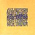
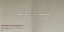

FAC 301
|
Additional Notes:
Conference held at Mottram Hall, Cheshire, 5th July 1990. Factory made special 4"x6" white note books (and possibly also napkins) for the event.
Number also allocated to a book to be written by Tim Chambers (who worked for Ikon) about the first 50 numbers in the Fac-catalogue.
FAC 302
|
Contents:
7": UK 1990 (Factory FAC 302/7) 3:55 Kinky Afro (Mix) 4:36 Kinky Afro (Live) CS: UK 1990 (Factory FAC 302C) 5:08 Kinky Afro 6:38 Kinky Afro (Live) 12": UK 1990 (Factory FAC 302) CDS: UK 1990 (Factory FACD 302) 3:58 Kinky Afro (Radio Mix) 5:08 Kinky Afro 6:38 Kinky Afro (Live) 12": UK 1990 (Factory FAC 302R) 7:26 Kinky Afro (Euromix) * 4:15 Kinky Afro (Euromix Edit) 5:55 Step On (U.S Dub Mix) 12": UK 1990 (Factory/FFRR London FAC 302R/KINKR-1) [DJ promo] ?:?? Kinky Afro (Peter Lorimar 12" Remix) * 6:38 Kinky Afro (Live) * Probably the same track.
Additional Notes:
|  |
FAC 303
|
Contents:
CD: FR 1992 (Factory FAC 303) [promo] ?:?? NEW ORDER - Intermede Musical No. 1 * 3:35 JOY DIVISION - Transmission ?:?? NEW ORDER - Intermede Musical No. 2 * 3:14 A CERTAIN RATIO - Shack Up ?:?? NEW ORDER - Intermede Musical No. 3 * 5:50 STOCKHOLM MONSTERS - Partyline ?:?? NEW ORDER - Intermede Musical No. 4 * 6:27 NORTHSIDE - My Rising Star ?:?? NEW ORDER - Intermede Musical No. 5 * 4:14 CATH CARROLL - Moves Like You ?:?? NEW ORDER - Intermede Musical No. 6 * * Sections of The Happy One.
Additional Notes:
Promo-only French issue for Palatine release, in cardboard brown sleeve with blue lettering. Given away to new subscribers of 'Les Inrockuptibles', a music magazine.
FAC 304
|
Contents:
12": UK 1991 (Factory FAC 304) CDS: UK 1991 (Factory FACD 304) 3:35 JOY DIVISION - Transmission 5:27 MARCEL KING - Reach for Love 2:56 JAMES - Hymn From A Village 4:14 CATH CARROLL - Moves Like You
FAC 305C
|
Contents:
CS: UK 1991 (Factory FAC 305C) ?:?? NORTHSIDE - Moody Places Instrumental ?:?? NEW ORDER - Bizarre Love Triangle (Stephen Hague Mix) ?:?? CATH CARROLL - Moves Like You ?:?? HAPPY MONDAYS - Kinky Afro (Euromix 12-inch Version) 3:37 THE WENDYS - Suckling ?:?? REVENGE - The Trouble With Girls 4:30 ELECTRONIC - Lucky Bag (Miami Edit) ?:?? CATH CARROLL - Next Time (Edit) 5:52 VINI REILLY AND DURUTTI COLUMN - Megamix
Additional Notes:
Given away free as part of "Select" magazine March 1991 issue.
FAC 306
|
Contents:
12": UK 1990 (Factory FAC 306) CDS: UK 1990 (Factory FACD 306) 5:33 Festival of Britain 5:13 Fantasy Island 4:00 The World is in Heaven (Classical Version) 4:22 The World is in Heaven (7" Dance Version) 12": UK 1990 (Factory FAC 306R) [white label promo] ?:?? The World is in Heaven (Extended Dance Version) 4:22 The World is in Heaven (7" Dance Version) 4:00 The World is in Heaven (Classical Version)
FAC 307
|
Contents:
7": UK 1991 (Factory FAC 307-7) 4:17 Moves Like You 5:40 Too Good to Live (Vocal Track) 12": UK 1991 (Factory FAC 307) 6:17 Moves Like You (12" Version) * 5:40 Too Good to Live (Vocal Track) 7:17 Angel (Remix) CS: UK 1991 (Factory FAC 307C) 6:17 Moves Like You (12" Version) 5:40 Too Good to Live (Vocal Track) CDS: UK 1991 (Factory FACD 307) 4:17 Moves Like You (7" Version) 5:40 Too Good to Live (Vocal Track) 6:17 Moves Like You (12" Version) * Cover of the 12" indicates 7" version, obviously an error.
FAC 308
|
Contents:
7": UK 1991 (Factory FAC 308-7) CS: UK 1991 (Factory FAC 308C) 4:18 Take 5 4:03 Who's To Blame (Instrumental) 12": UK 1991 (Factory FAC 308) 4:07 Take 5 3:34 Who's To Blame (Instrumental) CDS: UK 1991 (Factory FACD 308) 3:13 Take 5 (12") 4:10 Take 5 (7") 3:34 Who's To Blame (Instrumental) VHS: UK 1991 (Factory FAC 308) [PAL] ?:?? Take 5 (Promo Video)
Additional Notes:
Given away free as part of "Select" magazine March 1991 issue.
FAC 309
|
FACT 310
|
Contents:
LP: UK 1991 (Factory FACT 310) CD: UK 1991 (Factory FACD 310) CS: UK 1991 (Factory FACT 310C) 4:11 Take 5 5:55 Weight Of Air 3:10 Funky Munky 5:13 A Change Is On Its Way 4:55 Yeah Man 3:40 Tour De World 4:18 Wishful Thinking 4:23 Shall We Take A Trip 3:33 Who's To Blame 3:00 Practise Makes Perfect 4:23 My Rising Star 4:36 Moody Places
FAC 311
|
Additional Notes:
Designed by Julian Morey after he left Peter Saville Associates.
"This was my first freelance job after leaving PSA in the summer of 90. There was letterhead, continuation, comp, sticker and envelopes - each used a different metallic colour. It was printed by Lane Holmes & Smith (Manchester) I'm not sure what the visiting cards are. maybe they were done later. The logo (Factory) was designed by PSA, based on the typeface Rotis. I believe we one of the first companies in the UK to use this font, it's gone on to be used just about everyone." - Julian
White waxed paper, envelopes, visiting cards. The sticker was metallic green, envelope - a dirty sort of gold, comp slip was dark metallic purple, letterhead metallic mauve. Embossed Factory TM logos and black printing.
Additional Notes:
FAC 312
|
Contents:
7": UK 1991 (Factory FAC 312/7)
CS: UK 1991 (Factory FAC 312C)
3:52 Loose Fit (Edit)
4:17 Bob's Yer Uncle (Edit)
7": UK 1991 (Factory FAC 312) [censored radio promo] *
?:?? Loose Fit (Radio Edit) **
?:?? Bob's Yer Uncle (Edit) ***
12": UK 1991 (Factory FAC 312)
5:59 Loose Fit
6:20 Bob's Yer Uncle
CDS: UK 1991 (Factory FACD 312)
5:59 Loose Fit
6:20 Bob's Yer Uncle
4:17 Kinky Afro (Euromix)
CDS: UK 1991 (Factory FACD 312) [censored radio promo] */****
?:?? Loose Fit (Radio Edit)
6:20 Bob's Yer Uncle
4:17 Kinky Afro (Euromix)
7": UK 1991 (Factory FAC 312R/7) *****
3:43 Loose Fix
4:22 Bob's Yer Tune
12": UK 1991 (Factory FAC 312R)
8:03 Loose Fix
6:52 Bob's Yer Tune
* The censoring (one line sticker) was due to BBC restrictions during
the Gulf war. In the case of "Loose Fit", the line "Gonna buy an airforce
base / Gonna wipe out your race" was removed.
** Matrix states FAC 312R/7 A1
*** Matrix states FAC 312R/7 B1
**** Matrix states FACD 312R/7
***** Some released with FAC 312/7 sleeve and labels, possibly accidentally.
Additional Notes:
FAC 313
|
Contents:
VHS: UK 1991 (Factory FAC 313) [PAL promo ?] ?:?? Transmission
Additional Notes:
Black and white version of Joy Division performing 'Transmission' on BBC2 'Something Else'.
Number allocated to the actual clip (?). Actually released to TV stations as FAC 400 (?)
|
|
FACT 314
|
Contents:
LP: UK 1991 (Factory FACT 314) CD: UK 1991 (Factory FACD 314) CS: UK 1991 (Factory FACT 314C) 3:35 JOY DIVISION - Transmission 3:32 ORCHESTRAL MANOUEVRES IN THE DARK - Electricity 3:14 A CERTAIN RATIO - All Night Party 3:00 DURUTTI COLUMN - Sketch for Summer 4:46 X-O-DUS - English Black Boys 3:11 ESG - You're No Good 3:26 JOY DIVISION - Love Will Tear Us Apart 2:51 JAMES - Folklore 6:05 A CERTAIN RATIO - Flight 6:04 SECTION 25 - New Horizon 4:25 NEW ORDER - Ceremony 3:07 STOCKHOLM MONSTERS - Happy Ever After 5:30 QUANDO QUANGO - Tingle
Additional Notes:
Part of the FACT 400 package, or available separately.
|  |
FAC 315
|
Additional Notes:
A 33x25cm cardboard box with the same 'scratch' design as on FAC 307. The box contains a video with 'Beast' and 'Moves Like You', FACD 307, FACT 210C, an invitation card for a CC gig at Ronnie Scott's jazz club in London, and 3 photos of CC by Robert Mapplethorpe. All items are in cardboard slipcases with the same design as the box.
FACT 316
|
Contents:
CS: UK 1990 (Factory FACTC 316) CD: UK 1990 (Factory FACD 316) DAT: UK 1990 (Factory FACT 316D) 8:56 Altri canti d'Amor (8) 2:58 Interrotte speranze (7) 5:58 Lamento della ninfa (8) 4:59 Ninfa che scalza il piede (8) 2:07 Quell' augellin (4) 3:52 Piagne e Sospira (4) 2:42 Si ch'io vorrei morire (4) 4:11 Vorrei baciarti (7) 2:33 Quel sguardo sdegnosetto (10) 5:27 Gira, il nemico (8) 4:38 Vago augelletto (8) 4:21 Ohimeil bel viso (6) 11:17 Lamento d'Arianna (6)
Additional Notes:
Numbers refer to Books.
FAC 317
|
Additional Notes:
Promotional badge for FACT 210
This catalogue number was also applied (temporarily?) to a Factory Classical showcase event to launch FACT 316/326/336/346/356 at Glasgow's Tramway Theatre 7 September 1990 featuring I Fagiolini, Rolf Hind, Graham Fitkin, Red Byrd, Steve Martland and Durutti Column.
FAC 318
|
Additional Notes:
A Factory Classical showcase event to launch FACT 316/326/336/346/356 at The Hacienda 16 October 1990 featuring I Fagiolini, Rolf Hind, Graham Fitkin, Red Byrd, Steve Martland and Durutti Column.
A T-shirt also appears to have been available for this event.
Number also later allocated to a Factory artwork exhibition.
FAC 319
|
Contents:
12": UK 1991 (Factory FAC 319) CD: UK 1991 (Factory FACD 319) 4:43 Camper Van 3:32 Barking Mad 2:35 Lifetime at the Sink 8:26 Long Night Narrow Boat ~ It's Alright Matt ~ Wear Headphones
Additional Notes:
A Factory artwork exhibition.
This catalogue number was also applied (temporarily?) to a Factory Classical showcase event to launch FACT 316/326/336/346/356 at London's Bloomsbury Theatre 29/30/31 October 1990 featuring I Fagiolini, Rolf Hind, Graham Fitkin, Red Byrd, Steve Martland and Durutti Column. This event probably became FAC 286.
FACT 320
|
Contents:
LP: UK 1990 (Factory FACT 320) * LP: UK 1990 (Factory FACT 320) ** CD: UK 1990 (Factory FACD 320) * CS: UK 1990 (Factory FACT 320C) ** 3:59 Kinky Afro 4:58 God's Cop 4:04 Donovan 3:20 Grandbag's Funeral 5:07 Loose Fit 4:24 Dennis and Lois 5:10 Bob's Yer Uncle 5:17 Step On 3:28 Holiday 4:02 Harmony * First edition had the logo's of the sweets. ** Subsequent editions had the logo's removed due to publishing problems.
FAC 321
|
Additional Notes:
Actually the Perfect Kiss video-clip as seen on FACT 225. Note the number is the reverse of 123 (i.e Perfect Kiss).
FACT 322
|
Contents:
2xLP: UK 1991 (Factory FACT 322) * CD: UK 1991 (Factory FACD 322) CS: UK 1991 (Factory FACTC 322) 7:32 Hallelujah 5:47 Donovan 4:30 Kinky Afro 5:40 Clap Your Hands 5:09 Loose Fit 4:02 Holiday 5:15 Rave On 3:21 E ** 4:49 Tokoloshe Man 4:55 Dennis and Lois 5:05 God's Cop 7:12 Step On ?:?? Bob's Yer Uncle * 12:16 W.F.L. * Labelled as a track on the UK FACD 322, but was withdrawn before manufacturing the product due to a supposed lack of space on the disc. The track was only included on LP/CS formats. ** In fact "Do It Better."
Additional Notes:
This release is the official version of a bootleg that was available titled 'Baby Bighead'.
FAC 323
|
Additional Notes:
This number was allocated to the first single to be released from the new album (i.e what was to become 'Republic' on London). This may or may not have been 'World'. Apparently 'Regret' was a relatively last- minute substitute.

|
FACT 324
|
Contents:
LP: UK 1991 (Factory FACT 324) CD: UK 1991 (Factory FACD 324) CS: UK 1991 (Factory FACT 324C) 3:14 A CERTAIN RATIO - Shack Up 7:18 NEW ORDER - The Beach 4:38 SECTION 25 - Looking From a Hilltop 2:09 A CERTAIN RATIO - Skip Scada 3:41 KALIMA - Sparkle 5:27 MARCEL KING - Reach for Love 7:29 CABARET VOLTAIRE - Yashar 7:46 52nd STREET - Cool As Ice 4:42 NEW ORDER - Confusion * 7:10 FADELA - N'Sel Fik 6:24 QUANDO QUANGO - Genius 4:38 HAPPY MONDAYS - 24 Hour Party People * 5/87 Version.
Additional Notes:
Part of the FACT 400 package, or available separately.
FACT 325
|
Contents:
LP: UK 1991 (Factory FACT 325) * CD: UK 1991 (Factory FACD 325) CS: UK 1991 (Factory FACT 325C) ** 1:56 BUZZCOCKS - Breakdown 2:50 SLAUGHTER AND THE DOGS - Cranked Up Really High 2:49 JOHN COOPER CLARKE - Suspended Sentence 4:54 JOY DIVISION - She's Lost Control 3:05 JILTED JOHN - Jilted John 2:47 A CERTAIN RATIO - Do The Du 3:41 ORCHESTRAL MANOEUVRES IN THE DARK - Almost 3:47 U2 - 11 O'Clock Tick Tock 5:29 NEW ORDER - Everything's Gone Green 3:51 HAPPY MONDAYS - Lazyitis 4:19 WORLD OF TWIST - She's A Rainbow 4:28 NEW FAST AUTOMATIC DAFFODILS - Get Better 3:02 THE HIGH - More * Sleeve issued with paper sash, known as an 'obi'. ** Issued in a special wrapper.
Additional Notes:
A compilation of the work of Martin Hannett, with liner notes by C.P. Lee.
FACT 326
|
Contents:
CS: UK 1990 (Factory FACTC 326) CD: UK 1990 (Factory FACD 326) DAT: UK 1990 (Factory FACT 326D) [PERCY GRAINGER] 2:48 Mock Morris 1:57 Shepherd's Hey [MICHAEL FINNISSY] * 1:51 Midsummer Morn 9:28 I'll Give my Love a Garland 3:04 Come Beat the Drums and Sound the Fifes [JAMES MacMILLAN - Piano Sonata] 2:43 Adagio 8:28 Grandioso ed Affretando 2:14 Adagio 3:04 Andante [JANACEK - In the Mists] 4:27 Molto Adagio 3:03 Andantino 4:23 Presto 1:46 With Drums and Pipes [BARTOK - Out of Doors] 2:16 Barcarolla 2:35 Musettes 5:27 The Night's Music 2:05 The Chase * From 'English Country Tunes', 1977
FAC 327
|
Contents:
12": UK 1992 (Factory FAC 327) CDS: UK 1992 (Factory FACD 327) 4:50 Deadbeat 4:52 Cloud Nine 6:26 State of Shock 4:42 Little Pig ~ Get the Handcuffs... ~ The Devil Drives 12": UK 1992 (Factory FAC 327R) [white label promo] 4:54 Deadbeat (Gary Clail Remix) ?:?? Deadbeat (Gary Clail Remix 2) * 6:01 State of Shock (L'Poole Edit) 5:16 State of Shock (Paralized Mix) * Unavailable elsewhere.
FAC 328
|
Contents:
7": UK 1991 (Factory FAC 328-7) CS: UK 1991 (Factory FAC 328C) 3:56 Feel Every Beat (7" Remix) 4:08 Lean To The Inside 12": UK 1991 (Factory FAC 328) 6:48 Feel Every Beat (12" Remix) 6:02 Feel Every Beat (Dub Mix) 4:08 Lean To The Inside CDS: UK 1991 (Factory FACD 328) 3:56 Feel Every Beat (7" Remix) 5:39 Feel Every Beat (DNA Mix) 4:01 Second To None 4:08 Lean To The Inside
Additional Notes:
FAC 329
|
Contents:
7": 1991 UK (Factory FAC 329) CS: 1991 UK (Factory FAC 329C) 3:45 Tasty Fish (Pascal Mix) 3:37 Tasty Fish (O.T. Mix) 12": 1991 UK (Factory FAC 329) 5:20 Tasty Fish (Pascal Mix) 4:13 Tasty Fish (O.T. Mix) CDS: 1991 UK (Factory FACD 329) 3:45 Tasty Fish (Pascal Mix) 5:20 Tasty Fish (Pascal Mix 12") 4:13 Tasty Fish (O.T. Mix 12") 4:25 Tasty Fish (The Almond Slice Mix)
FACT 330
|
Contents:
LP: UK 1992 (Factory FACT 330) [test pressing] 3:46 Tasty Fish 3:39 The Greatest Thing 3:47 Selfish 4:43 Movin' On 4:21 Ninth Configuration 4:26 Feel This Love 3:51 Spirit Level 2:05 Night Voice 4:48 Innocence
Additional Notes:
About 5-10 copies exist.
This album found the light of day as 'Other Two & You' on London Records, although the version of Selfish on the London release is 4:08 - different mix.
FAC 331
|
Additional Notes:
Designed by Ben Kelly.
An expensive board room table that the Happy Mondays broke!
FAC 332
|
Contents:
7": UK 1991 (Factory FAC 332) [white label promo] 7": UK 1991 (Factory FAC 332) CS: UK 1991 (Factory FAC 332C) CS: AU 1991 (Factory FAC 332C) * 4:01 Judge Fudge (7" Edit) 4:21 Tokoloshe Man ?:?? Stayin' Alive (7" Edit) * 12": UK 1991 (Factory FAC 332) 6:18 Judge Fudge 4:21 Tokoloshe Man ~ Judge Tickles ~ Fudge Pickles CDS: UK 1991 (Factory FACD 332) 4:01 Judge Fudge (7") 4:21 Tokoloshe Man 6:18 Judge Fudge (12")
FAC 333
|
FACT 334
|
Contents:
LP: UK 1991 (Factory FACT 334) CD: UK 1991 (Factory FACD 334) CS: UK 1991 (Factory FACT 334C) 2:37 JOY DIVISION - Wilderness 3:50 TUNNELVISION - Watching the Hydroplanes 3:23 THE DISTRACTIONS - Time Goes By So Slow 6:24 THE WAKE - Talk About the Past 5:50 STOCKHOLM MONSTERS - Partyline 3:06 HAPPY MONDAYS - Kuff Dam 5:15 NEW ORDER - Age of Consent 4:56 THE RAILWAY CHILDREN - Brighter 4:15 DURUTTI COLUMN - Otis 3:31 MIAOW - When It All Comes Down 4:07 REVENGE - Seven Reasons 2:56 JAMES - Hymn From a Village
Additional Notes:
Part of the FACT 400 package, or available separately.
FACT 335
|
Contents:
LP: UK 1992 (Factory FACT 335) CD: UK 1992 (Factory FACD 335) CS: UK 1992 (Factory FACT 335C) 5:46 Laugh 2:40 Adventure Baby 4:30 Winter Plume 4:33 Barking Mad 4:44 June 4:56 Get Up, Get Out 3:14 Captain Scarlet 4:44 How Mortal We Are 4:51 Taxiland 4:09 Wheelaway (My Yesterday) 5:08 Travis And Perkins (Plumbing And Building Supplies) ~ Thanks to Steve, Mark + Paul ~ Pouls! CS: UK 1992 (Factory FACT 335P) [promo] * 5:46 Laugh 4:33 Barking Mad 4:30 Winter Plume 2:40 Adventure Baby * Titled 'Laugh - 4 Tracks From The Summer Album of '92'.
FACT 336
|
Contents:
CS: UK 1990 (Factory FACTC 336)
CD: UK 1990 (Factory FACD 336)
DAT: UK 1990 (Factory FACT 336D)
9:33 BRIAN ELIAS - Song
7:34 CLAUDIO MONTEVERDI - Io che nell' otio nacqui
[FRANK MARTIN - Trois poemes de la Mort]
3:27 {1}
3:35 {2}
7:34 {3}
2:18 CLAUDIO MONTEVERDI - Se vittorio si belle
[JOHN PAUL JONES - Amores Passados]
4:57 Al son de los arroyuelos
6:06 No Dormio
4:33 So elle encina
5:48 CLAUDIO MONTEVERDI - Zefiro Torna
7:05 HARVEY BROUGH - The Red Bird
FACT 337
|
Contents:
CDS: UK 1991 (Factory FACD 337) 12": UK 1991 (Factory FACT 337) 4:20 Enjoy The Things You Fear 4:04 Newspaper Cows 3:35 The Pop Song (Live) 8:20 The Sun's Going To Shine For Me Soon (Live)
Additional Notes:
Live tracks mixed by Jeremy Kerr of ACR.
FAC 338
|

|
FAC 339
|
Contents:
VHS: CA 1992 (Polygram ???) ?:?? DURUTTI COLUMN - The Missing Boy */** ?:?? JOY DIVISION - Transmission */** ?:?? JOY DIVISION - Love Will Tear Us Apart ** ?:?? A CERTAIN RATIO - Shack Up ** ?:?? A CERTAIN RATIO - Tribecca ?:?? CABARET VOLTAIRE - No Escape ?:?? THE WAKE - Talk About the Past ** ?:?? NEW ORDER - Ceremony */** ?:?? NEW ORDER - Confusion ** ?:?? NEW ORDER - Blue Monday ?:?? RAILWAY CHILDREN - Brighter ** ?:?? HAPPY MONDAYS - Wrote For Luck ** ?:?? HAPPY MONDAYS - Tart Tart */** ?:?? HAPPY MONDAYS - Hallelujah ** ?:?? NORTHSIDE - Shall We Take A Trip ** ?:?? WENDYS - Pulling My Fingers Off ** ?:?? CATH CARROLL - Beast On The Street ** ?:?? REVENGE - Pineapple Face ** ?:?? ELECTRONIC - Get The Message ** ?:?? JOY DIVISION - Atmosphere ** * Live performance excerpt. All others are promotional videos/excerpts. ** Pretitled as FAC 13, FAC 23, FBN 1, FAC 88, FAC 33, FAC 93, FAC 167, FAC 232, FAC 176, FAC 242, FAC 268, FAC 297, FAC 255, FAC 267, FAC 287, and FACUS 2 respectively.
Additional Notes:
A 27 minute documentary featuring various Factory artists, including Joy Division live excerpts, interviews with Tony Wilson, Jeremy Kerr and Martin Moscrop, Bernard Sumner, Steven Morris and Peter Hook, Gary Newby from Railway Children, Shaun Ryder, Johnny MacArthur and Ian White from The Wendys, and Vini Reilly. .
First broadcast 26 January 1992 on MTV's '120 Minutes', has been shown on MTV Europe several times.
Released in Canada as 'Palatine' (!), given away at HMV stores with the 'Palatine' set.
Most can be found elsewhere (see FACT 37, 56, 137, 225, 262, FBNL7, NewOrderStory, etc).
"I have a copy of this I picked up from a fellow in Toronto back in August 1998. It's basically the artwork from the UK Palatine tape, with no FAC number on it anywhere. The contents of the tape are indeed the MTV program. At the very beginning of the tape there's a static shot of a FAC 339 catalog number as part of an artsy image of sorts. The cover is just a simple thin shiny cardboard sleeve with openings at both ends." - Tom Zimmer
FAC 340
|
FAC 341
|
Additional Notes:
A meal, organised by Factory/London at the London Zoo Aquarium.
FACT 400 lists this as FAC 342.
FAC 342
|
Additional Notes:
More info needed.
FAC 343
|
FACT 344
|
Contents:
LP: UK 1991 (Factory FACT 344) LP: UK 1991 (Factory FACT 344) [white label promo] CD: UK 1991 (Factory FACD 344) CS: UK 1991 (Factory FACT 344C) 5:55 NEW ORDER - True Faith 7:11 HAPPY MONDAYS - WFL (Think About the Future) 6:07 DURUTTI COLUMN - The Together Mix 5:28 NORTHSIDE - Shall We Take a Trip 4:31 NEW ORDER - World In Motion 4:02 STEVE MARTLAND - The World Is In Heaven (Classical Version) 5:16 ELECTRONIC - Getting Away With It 4:03 THE WENDYS - Pulling My Fingers Off 4:14 CATH CARROLL - Moves Like You 6:27 NORTHSIDE - My Rising Star 4:27 HAPPY MONDAYS - Step On (Remix '91) 4:11 JOY DIVISION - Atmosphere
Additional Notes:
Part of the FACT 400 package, or available separately.
FAC 345
|
FACT 346
|
Contents:
CS: UK 1990 (Factory FACTC 346) CD: UK 1990 (Factory FACD 346) DAT: UK 1990 (Factory FACT 346D) 4:29 Sciosophy 6:74 Untitled2 8:50 There is a Great Weight on my Head Tonight 6:27 Flak [The Cone Gatherers in Three Parts] 6:27 Part One 2:02 Part Two 2:40 Part Three 1:58 Piano Piece '90 1:35 From Yellow to Yellow 4:09 Piano Piece Early '89 2:23 Piano Piece Mid '89 2:40 Piano Piece Late '89
FAC 347
|
Contents:
7": UK 1992 (Factory FAC 347/7) 3:22 Barking Mad 3:13 Captain Scarlet 12": UK 1992 (Factory FAC 347) CDS: UK 1992 (Factory FACD 347) 3:22 Barking Mad 3:13 Captain Scarlet 4:43 How Mortal We Are (Mad Hat Mix)
Additional Notes:
FAC 348
|
Additional Notes:
Nothing released under this number, however 'Disappointed' was a UK Parlaphone release with a Factory logo on the back cover. It is likely that Factory allocated this number for that release prior to different arrangements being made.
FAC 349
|
Additional Notes:
Apparently this was going to be 'Movin On'.
FAC 350
|